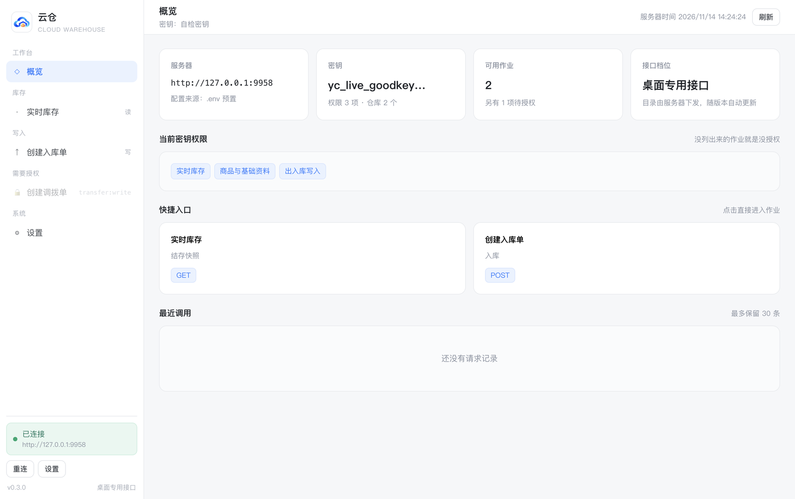
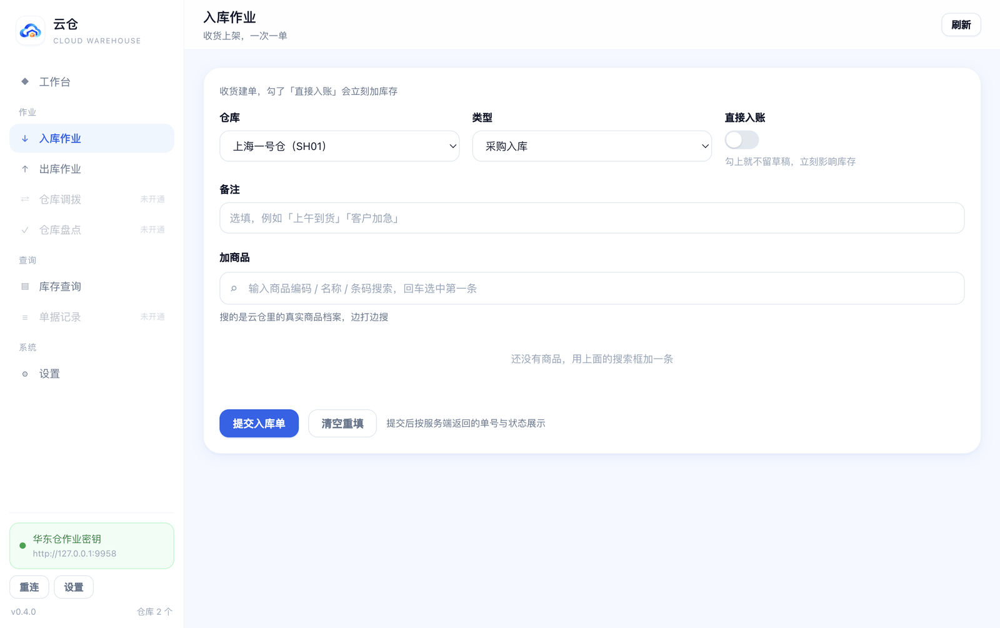
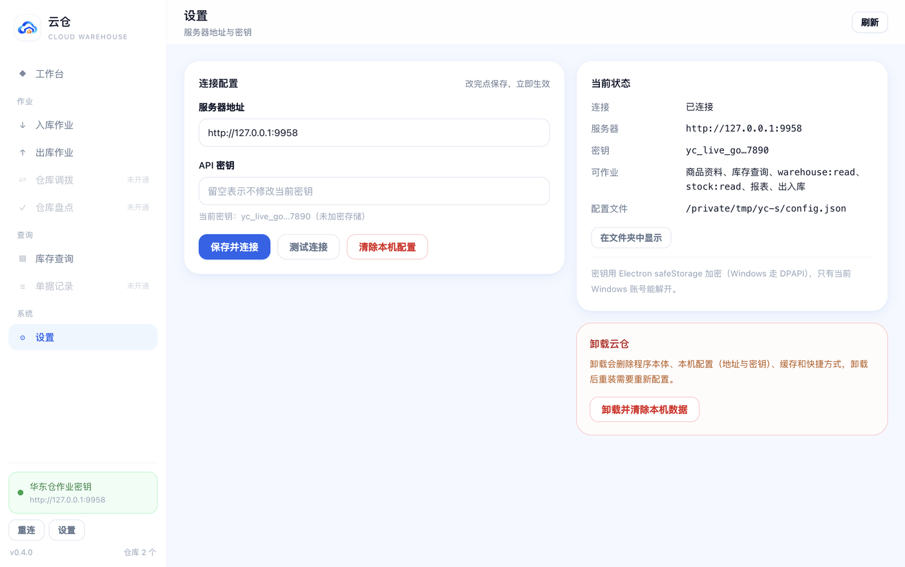

把云仓
装进桌面
第一次打开填 服务器地址 与 API 密钥，之后双击图标直接进作业界面。 能看到哪些作业、能写哪几类单据，全由那把密钥的权限决定——同一个安装包，发给仓管和发货员， 各看各的。
81.9 MB · Windows 10 1809 及以上（x64）· 自带运行环境，不用装 Node / 数据库 / 浏览器插件

界面
蓝白配色，跟 Web 端同一套观感；左栏按你拿到的权限生成作业菜单，没开通的显示「未开通」，不会让你点了才报错。


桌面端做什么
跟 Web 端同一套蓝白界面：进页面就是业务表单，仓库、商品、可用量自动带出来，不用记任何接口。
打开就能干活
服务器地址与密钥只填一次，用 Windows DPAPI 加密保存；之后双击图标直接进工作台，仓库清单自动加载。
能做什么由权限决定
入库、出库、调拨、盘点按这把密钥的权限出现；没开通的作业在左栏灰着，不会让你点了才报错。
自带更新，不用重装
设置页「检查更新」会同时问更新中心与三个地域的对象存储，取最快的源下载，校验 SHA256 后静默安装；密钥失效也有明确提示。
重试不会重复建单
提交时自带请求幂等标识，网络抖一下重试也不会多建一张单；同一批数据重复提交会被服务端拦下。
货位、商品都能管
入库时按仓库选放置货位；商品档案可新增、导入 CSV、导出 CSV；库存与单据按类型翻页查。
卸载得干净
设置页里有卸载入口；卸载会一并清掉程序、本机配置（地址与加密密钥）、缓存、快捷方式和开机自启登记，重装等于全新机器。
安装
一个 exe 搞定，不需要先装 Node、数据库或浏览器组件。
- 下载并双击 选安装目录（默认装到当前用户，不需要管理员权限）
- 桌面出「云仓」 同时建开始菜单项，图标与窗口标题都叫云仓
- 打开填两项 服务器地址 + API 密钥，测试通过即保存
安装包目前没有代码签名证书，Windows 会提示「未知发布者 / 通常不会下载此文件」。 核对文件大小 81.9 MB、SHA256 与下面一致后，点「更多信息 → 仍要运行」即可； 也可以在文件上右键 → 属性 → 勾选「解除锁定」再运行。代码签名证书正在申请，下一版起不再出现这个提示。
SHA256 005c74a574ce543e3e60207868dcf75686e2852f4452ead8ac7502610c8d9d7c
代码签名：云仓桌面端参与 SignPath Foundation 开源项目签名计划，安装包由 SignPath Foundation 提供代码签名。
密钥在云仓后台「设置 → API 管理」创建，明文只显示一次；丢失只能重建一把。
内网部署直接填 IP:端口，自签证书在客户端 .env 里开 CW_INSECURE_TLS=1 才放行。
系统要求
- Windows 10 1809 / Windows 11 / Server 2019+，64 位
- 磁盘可用空间 ≥ 500 MB
- 能访问云仓服务端（内网直连或域名 + 有效证书）
- 无需 Node.js、MySQL、IIS、浏览器扩展
卸载会删什么
- 程序本体：
%LOCALAPPDATA%\Programs\云仓 - 本机配置（地址 + 加密密钥）：
%APPDATA%\云仓 - 缓存、快捷方式、开机自启登记
- 旧版本残留目录（云仓客户端）
常见问题
几个上手时最容易卡住的地方。
提示「密钥已失效」怎么办？
说明服务端拒绝了这把密钥：可能被停用、过期、来源 IP 不在白名单，或所属账号被禁用。打开「设置」，地址保持不变，贴一把新密钥点「保存并连接」即可，不用重装、不用重启。
菜单里有些作业是灰的
那是没开通的作业，左栏显示「未开通」。让管理员在云仓后台给这把密钥加上对应权限（例如调拨），重连后就会出现。
连不上内网地址
先确认这台机器能 ping 通服务端端口；HTTPS 用自签证书时客户端默认会拒绝，需要在程序目录的 .env 里加 CW_INSECURE_TLS=1。请求超时默认 20 秒，可用 CW_TIMEOUT_MS 调整。
怎么换成另一台云仓？
设置页改服务器地址，密钥重新填（留空表示沿用旧密钥），保存后立即生效；旧配置被覆盖，不会残留两套。
为什么不需要装 Node 或数据库？
客户端把 Chromium 与运行时都打包进了安装包，只负责界面与请求；商品、库存、单据全在你的云仓服务器上，本机不存业务数据。